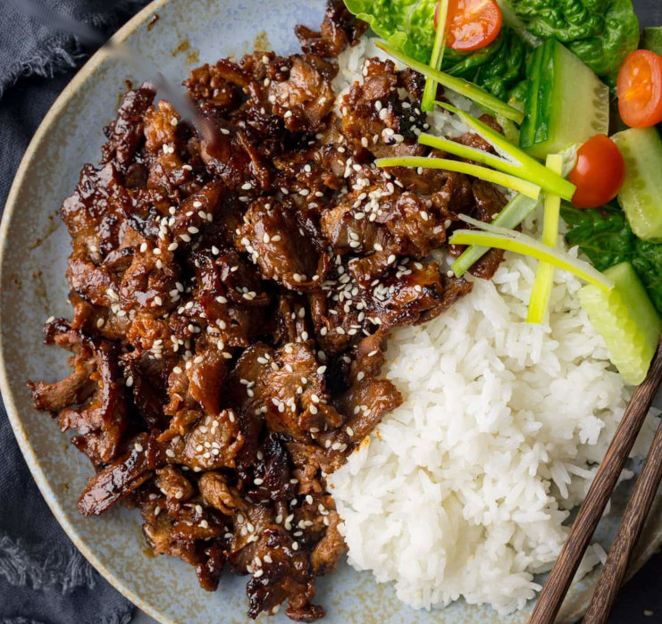

Beef Yakiniku

Yakiniku is a popular Japanese dish featuring thinly sliced beef grilled or stir-fried with a flavorful soy-based sauce, often enjoyed with rice and fresh vegetables for a balanced, savory-sweet meal.
Ingredients
- Thinly sliced beef (such as ribeye, sirloin, or short rib – about 400-500g / 1 lb, sliced very thin against the grain)
- Soy sauce (low-sodium preferred)
- Mirin (sweet Japanese rice wine)
- Sugar or honey
- Grated garlic (2-3 cloves)
- Grated fresh ginger (about 1-2 tsp)
- Toasted sesame oil
- Toasted white sesame seeds (for garnish)
Steps
- Prepare the marinade: In a bowl, mix soy sauce, mirin, sugar/honey, grated garlic, grated ginger, and a splash of sesame oil until the sugar dissolves.
- Marinate the beef: Add the thinly sliced beef to the marinade, toss to coat evenly, and let it sit for 15-30 minutes (or up to 2 hours in the fridge for deeper flavor).
- Heat a large pan, grill, or tabletop grill over high heat. Add a little oil if needed (sesame oil adds great aroma).
- Cook the marinated beef in batches in a single layer for 1-2 minutes per side until caramelized, browned, and just cooked through – avoid overcooking to keep it tender and juicy.
- Serve hot over steamed rice, garnish with toasted sesame seeds, and enjoy right away!
Back to main menu